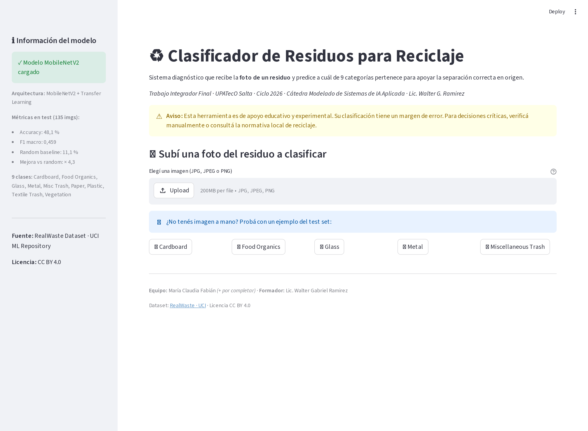
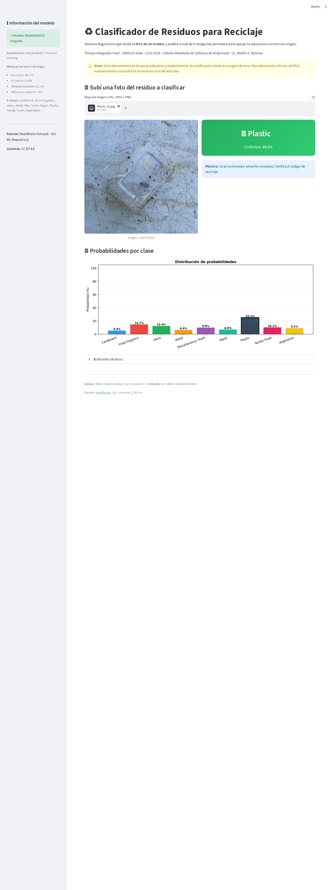

Resumen
App Streamlit con uploader de imagen carga el modelo y devuelve la predicción de tipo de residuo + probabilidades + recomendación contextual de reciclaje.
Cómo correr
pip install -r requirements.txt
streamlit run app/streamlit_app.pyLa app se abre en http://localhost:8501.
Capturas


Funcionalidad
| Sección | Descripción |
|---|---|
| Header | Título + caveat ético (no reemplaza el etiquetado correcto) |
| Sidebar | Info modelo + métricas |
| Uploader | JPG / PNG |
| Predicción | Card grande con clase y probabilidad |
| Bar chart | 9 probabilidades visualizadas |
| Recomendación | Mensaje según tipo de residuo (qué contenedor, cómo reciclarlo) |